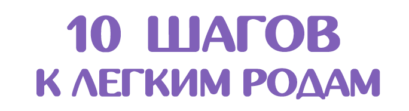
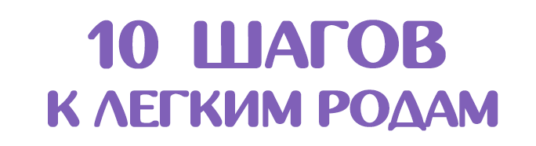
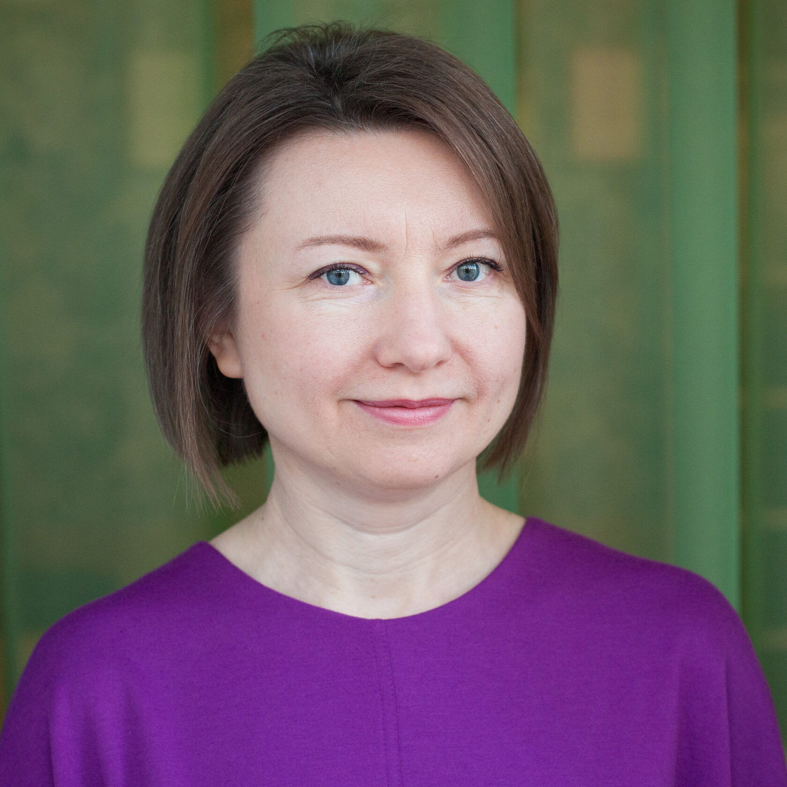
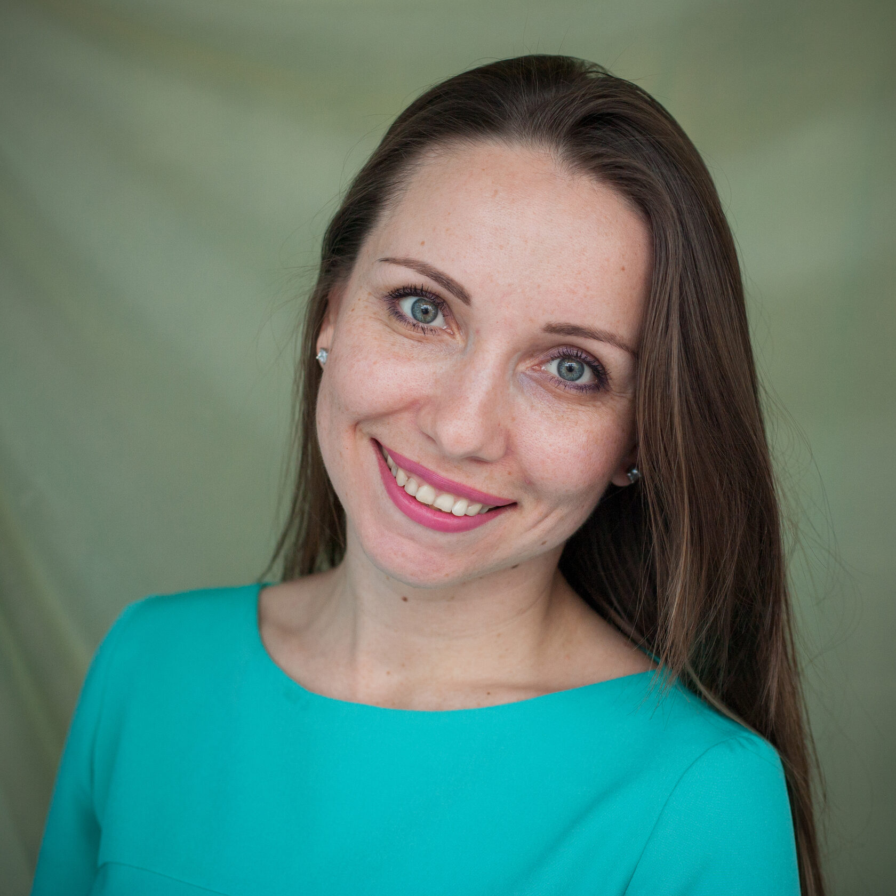
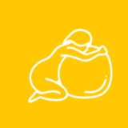
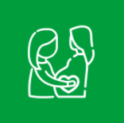
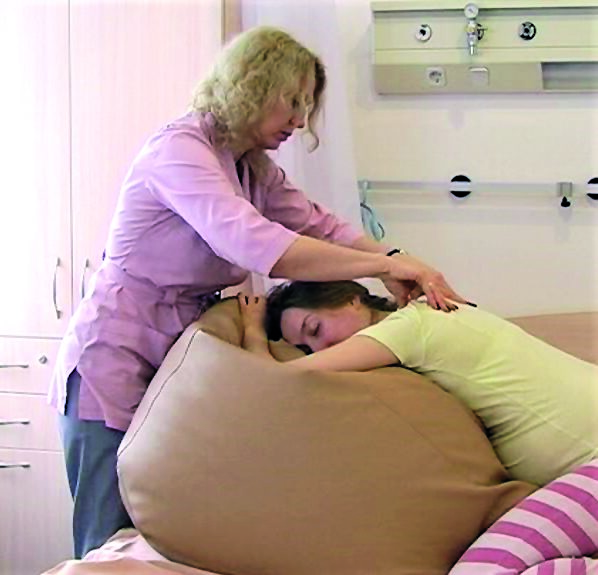
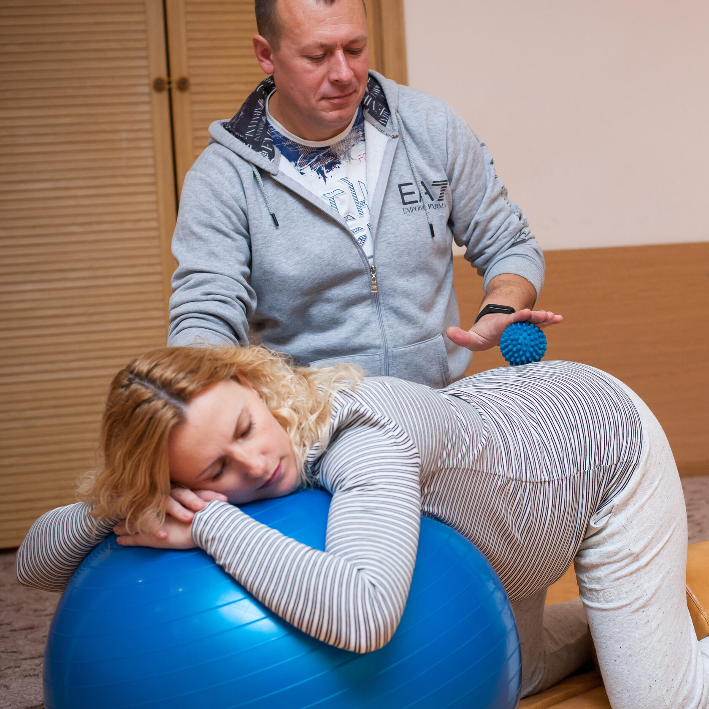
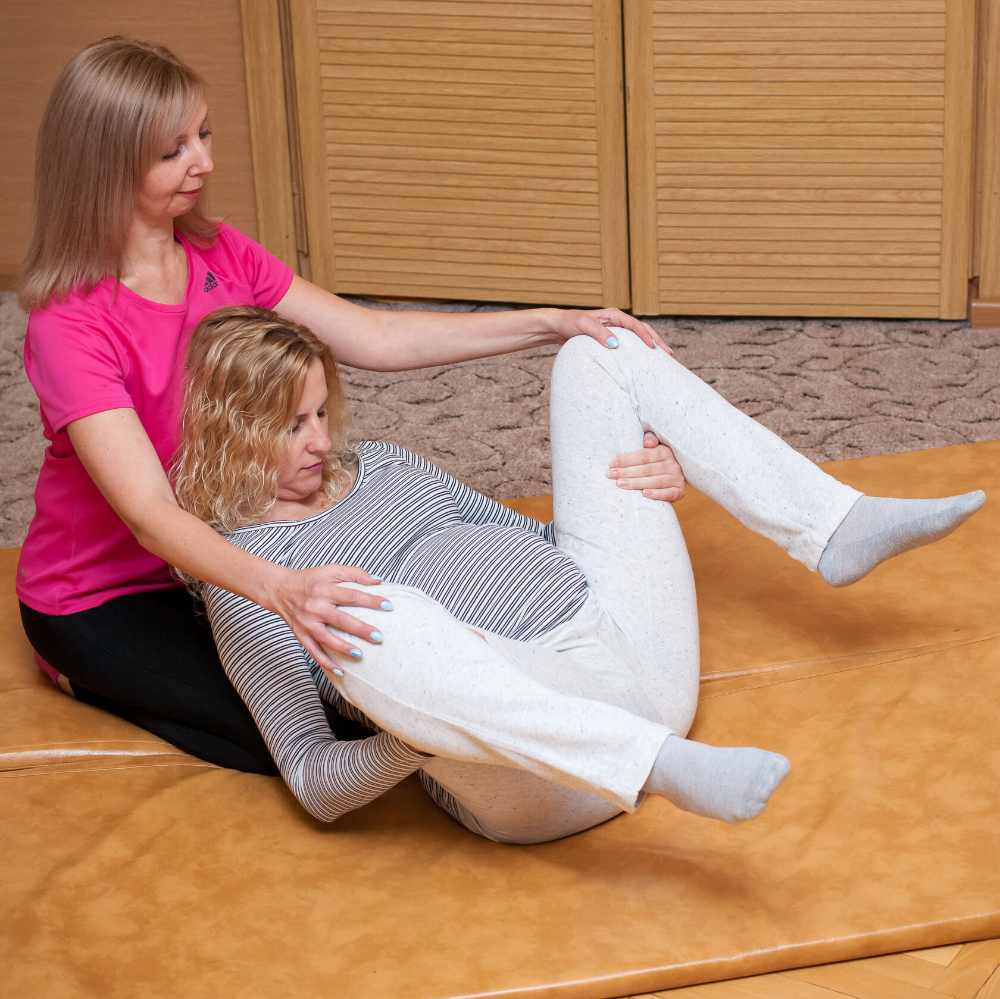

Онлайн-курс для вагітних
 

Розділяючи з нами вашу вагітність та пологи, ви отримуєте кваліфіковану консультативну та практичну допомогу, а також важливу у цей період емоційну підтримку. Приєднуйтесь!
Онлайн-курси підготовки до пологів
Дорогі майбутні батьки, вітаємо вас із дивовижним періодом очікування малюка! Він сповнений радощів та нових відкриттів, але часом не обходиться без сумнівів та тривог.
- Що потрібно купити до народження малюка?
- Коли їхати до пологового будинку?
- Як поводитися під час пологів?
- Народжувати з чоловіком чи з доулою?
Та найголовніше – що робити потім?!
Адже народження дитини це не фінальна крапка, а початок нової подорожі завдовжки життя!
Курс створено командою із 7 спеціалістів. Яка успішно працює в центрі "СЕМИЦВІТ" 12 років:
- психологи
- доули
- консультанти з грудного вигодовування
- лікар акушер-гінеколог
- лікар педіатр
Ведучі курсу:
-

Ольга Горбенко
психолог, доула, консультант з грудного вигодовування, мама хлопчика та дівчинки. Досвід ведення занять для вагітних та супроводу пологів у пологових будинках Дніпра та Києва – 15 років.
-

Наталія Руднєва
доула, консультант з грудного вигодовування, ведуча курсів у центрі "Семицвіт", мама з позитивним досвідом народження двох дітей та тривалого грудного вигодовування.
Чому ми:
-
12 років роботи центру
-

понад 2000 пар були нашими випускниками та стали щасливими батьками
-

понад 1000 жінок та сімей народили за допомогою наших доул
Залишилися питання? пишіть:
Переваги курсу онлайн-підготовки до пологів:
- Актуальна інформація не виходячи з дому, в зручній для вас обстановці.
- Навчальні відео від наших спеціалістів для перегляду у зручний для вас час.
-
- Зустрічі ОНЛАЙН трохи більше години
- двоє постійних ведучих
- немає втомливого сидіння біля екрану
- Ефективні практики, що полегшують пологи - ми багато років надаємо підтримку народжуючим жінкам як доули і знаємо, що дійсно працює
Підготовка до пологів онлайн - це 20 годин актуальної та впорядкованої інформації за 5 тижнів
Ваші 10 кроків до легких пологів
-

Фізіологія пологів: які важливі умови? Що впливає на наш комфорт під час народження дитини та як ми можемо собі допомогти?
-
Найчастіші медичні втручання під час пологів: як звести ризики до мінімуму? Перші дві години після пологів для мами та малюка.
-
Права та потреби жінки під час пологів та як їх реалізувати у пологовому будинку. Благополучне народження малюка – від кого та від чого воно залежить?
-

Малюк адаптується: перехідні стани, про які важливо знати. Як брати дитину? Як його доглядати кожен день? Сон, купання, одяг та прогулянки.
-

Малюк усередині: як усе влаштовано. Що таке провісники? Два варіанти початку пологів і що робити в кожному з них?
-

Грудне вигодовування: як улаштована «молочна фабрика»? Від чого залежить вироблення та виділення молока? Що таке правильне прикладання та як його досягти?
-

Перший період пологів – перейми. Коли їхати до пологового будинку і чого чекати? Техніки дихання та звучання під час пологів.
-

Грудне годування. Чи потрібно зціджуватись? Як уникнути найчастіших проблем: тріщини сосків, лактостаз, болючість під час годування. Годувати за режимом чи на вимогу?
-

Другий та третій періоди пологів. Дитина народжується. Профілактика розривів. Дихання під час потуг. Позиції для пологів та масаж.
-

Післяпологове відновлення мами. Профілактика післяпологової депресії. Про прихильність і «привчання малюка до рук». Нові ролі у сім'ї. Що означає бути батьками?